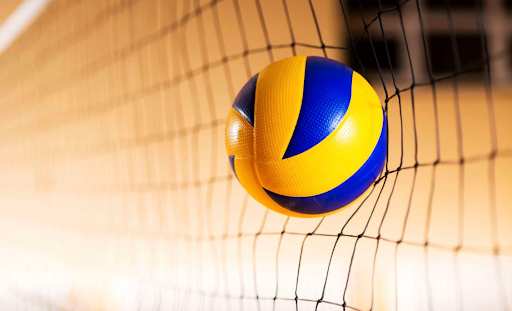
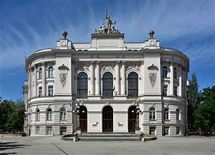

Nazywam się Michał Rutkowski
Posiadam wiele zaineresowań o szerokim spektrum.
Zaczynając od przedmiotów nakowych takich jak fizyka lub matematyka.
Idąc przez przedmioty bardziej techniczne takie jak informatyka.
Kończąc na piłce siatkowej oraz plażowej.
W tych dyscyplinach byłem w stanie zdobyć łącznie dwa mistrzostwa Polski
Opanowałem języki programowania takie jak
Java

Z dodatkowych osiągnięć w zeszłym roku zostałem finalistą mistrzostw Polski w młodziku
Dzięki temu tytułowi dostałem dodatkowe pkt w rekrutacji do liceum.
Umożliwiło mi jeszcze większe szanse na bardzo dobrą przyszłość
Opanowałem języki:
-Java
Nauczyłem się projektowania 3d
Druku 3D
Opanowałem Blendera
Po ukończeniu szkoły ponadpodstawowej planuje udać się na studia - Politechnike Warszawską
Po skończeniu studiów mam nadzieje na zalezienie dobrze płatnej pracy
